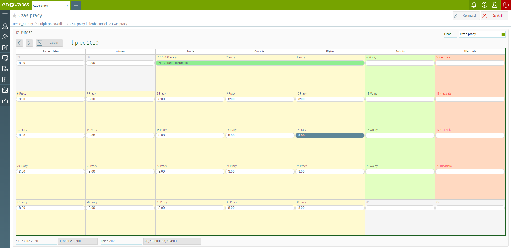
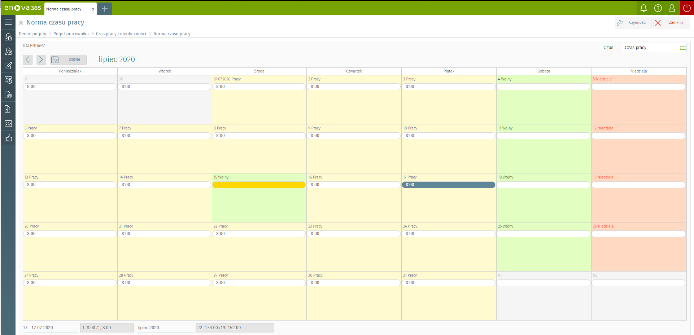
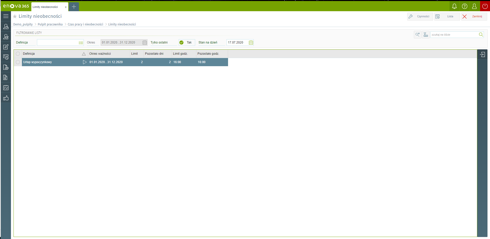
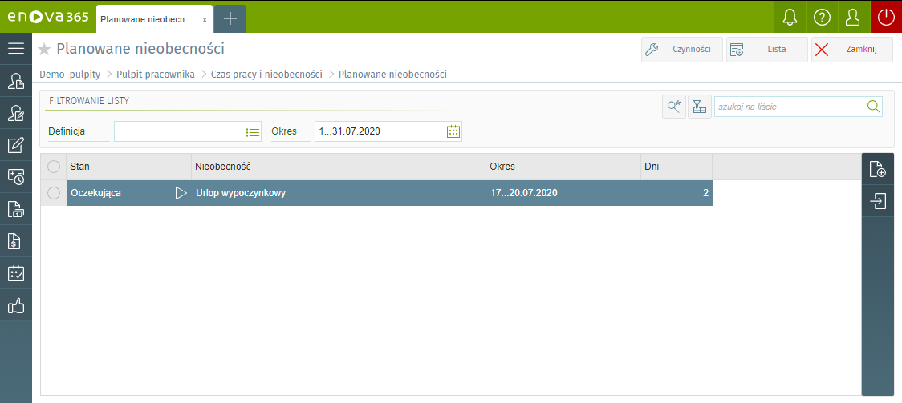

Czas pracy
Blok czasu pracy przedstawia miesięczną kartę czasu pracy pracownika w formie graficznej. Na czasie pracy zostaje odnotowany rzeczywisty czas pracy pracownika. Zapisany tutaj czas pracy porównywany jest z normą czasu pracy i na tej podstawie ustalana jest liczba nadgodzin. Dni,które zostały zmodyfikowane przez Użytkownika są oznaczone żółtym kolorem. W prawym górnym rogu kalendarza użytkownik ma możliwość wybrania sposobu wyświetlania danych na kalendarzu, według dostępnych opcji:
Czas pracy,
Od godziny/czas pracy (zostaje pokazana godzina rozpoczęcia pracy i czas przepracowany np. 7:00/8:00),
Od godziny/do godziny(przedstawia dokładną godzinę rozpoczęcia i zakończenia pracy np. 7:00…15:00).

Norma czasu pracy
Norma czasu pracy przedstawia miesięczną kartę normy czasu pracy pracownika w formie graficznej. Na kalendarzu dni, w których pracownik nie był zatrudniony są oznaczone ikoną. Dni,które zostały zmodyfikowane przez Użytkownika są oznaczone żółtym kolorem. W prawym górnym rogu kalendarza użytkownik ma możliwość wybrania sposobu wyświetlania danych na kalendarzu, według dostępnych opcji:
Czas pracy,
Od godziny/czas pracy (przedstawia godzinę rozpoczęcia pracy i liczbę godzin do przepracowania w danym dniu np. 7:00/8:00),
Od godziny/do godziny(przedstawia godzinę rozpoczęcia i zakończenia pracy w danym dniu np. 7:00…15:00).

Limity nieobecności
Lista zawiera limity nieobecności dla pracownika. Na liście są dostępne filtry:
Definicja - można wskazać jedną z definicji limitu nieobecności.
Okres - należy wskazać okres, za który będą wyświetlone limity nieobecności. Pole jest w trybie edycji jeżeli checkbox 'Tylko ostatni' jest ustawiony na NIE.
Tylko ostatni - checkbox z możliwością ustawienia TAK/NIE. Jeżeli checkbox jest zaznaczony na TAK, to na liście zostanie wyświetlony tylko ostatni limit nieobecności. Jeżeli 'Tylko ostatni' będzie ustawiony na NIE, na liście zostaną wyświetlone wszystkie limity.
Stan na dzień - checkbox z możliwością ustawienia TAK/NIE, aktywny tylko przy ustawieniu checkboxa 'Tylko ostatni' na 'TAK'. Na liście zostaną wyświetlone dane dotyczące limitu nieobecności, aktualne na dzień, który został wybrany w filtrze 'Stan na dzień'.

Planowane nieobecności
Funkcjonalność planowanych nieobecności dostępna jest w wersji platynowej modułu Kadry i płace.
Planowane nieobecności Jako Planowane nieobecności będą dostępne nieobecności, które w konfiguracji programu Narzędzia/Opcje/Kadry i płace/Kalendarze/Definicje nieobecności, na definicji mają zaznaczony parametr Definicja dostępna do wyboru na liście planowanych nieobecności na TAK.
Lista planowanych nieobecności Lista planowanych nieobecności pozwala na przeglądanie wszystkich planowanych nieobecności pracownika.
Dostępne filtry:
Definicja – słownik z wszystkimi dostępnymi nieobecnościami pracowniczymi,
Okres – okres, za który zostaną wyświetlone planowane nieobecności. W przypadku, gdy okres zapisywany jest przy pomocy pojedynczej kontrolki (w jednym polu) to może on zostać zapisany w formacie: „data…data”, na przykład: 2012-01-01…2012-12-31.
